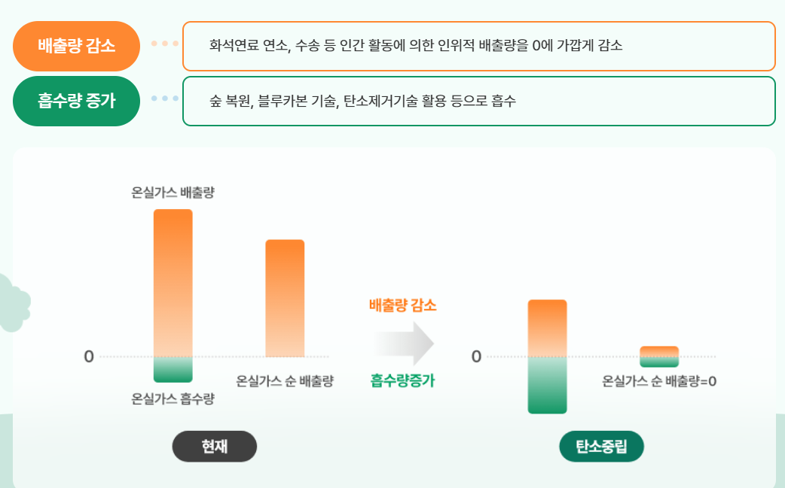

탄소중립에 대해 알아보고, 관련 자료를 탐색해보세요!
탄소중립은 온실가스 배출량과 흡수량을 균형 있게 만들어 순 배출량을 0으로 만드는 것을 의미합니다. 즉, 배출된 이산화탄소(CO2)나 메탄(CH4) 같은 온실가스를 재생에너지 사용, 에너지 효율 향상, 나무 심기, 탄소포집기술(CCUS) 등을 통해 흡수하거나 제거하여 기후위기를 해결하는 핵심 전략입니다.
우리나라는 2020년 10월 28일 ‘2050 탄소중립 선언’을 통해 2050년까지 탄소중립을 달성하겠다는 목표를 세웠습니다. 이를 위해 재생에너지 확대, 친환경 기술 개발, 시민의 생활 속 실천을 장려하고 있습니다.
출처: 탄소중립 정책포털